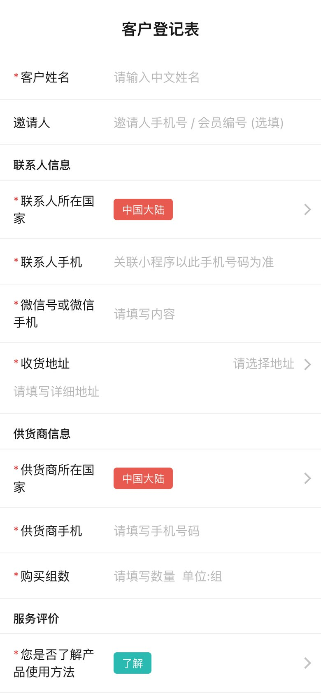
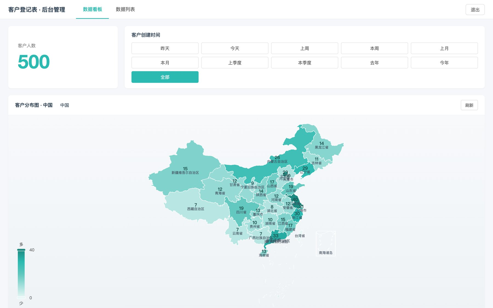

Solutions engineering & implementation · Canberra, Australia
From first conversation to live product.
I sit between the people who run a business and the systems that run it — understanding the need,
integrating the right tools, getting them live, and making sure the people using them succeed.
The staff console I designed and built for a biotech company. Shown: the drag-and-drop page builder
that lets marketing publish the storefront homepage without a developer.
11
partner systems integrated
50
releases shipped in six months
800+
members on the platform
17
product areas scoped and delivered
20
countries served by the registration tool
1
person, discovery to support
Case study
YuanQiPai.
A biotech company sells health products through dealers and directly to consumers on WeChat. It ran
on disconnected tools, and every marketing change needed outside help. I was the only technical
person — the single point of contact from first conversation to daily operations.
WeChat Pay · Alipay · AdaPay · refunds via the original channel
WeChat ecosystem
Login · Order Centre · WeCom staff sign-in · compliance
Business systems
Hupun ERP · store platform sync · SMS notifications
Cloud
Alibaba Cloud hosting · media storage · video · HTTPS · CDN
What I bring
Fluent in the business. Fluent in the build.
Most of what made this project work happened between the systems — and between the people.
11 partners
Integration & implementation
Eleven partner systems. One working platform.
WeChat Pay
Alipay
AdaPay
WeChat Login
WeChat Order Centre
WeCom SSO
Hupun ERP
Store platform sync
Aliyun SMS
Aliyun OSS
Aliyun Video
Read the API doc and the contract, prove it in a sandbox, handle what breaks in production, write down how it works.
17 areas
Discovery & requirements
Turning a conversation into a scope.
Goals from the owner became 17 product areas and a phased plan — storefront first.
0 downtime
Go-live & support
Launch it. Then answer the phone.
Readiness checklist, health checks, runbooks — and a database move nobody noticed.
16 docs
Enablement & training
Written so I'm not needed.
An illustrated operations guide and sixteen documents; staff make day-to-day changes themselves.
50 releases
Delivery & iteration
Ship small. Ship often.
Fifty releases in six months, each small enough to reverse, each with notes the client could read.
paperwork included
Compliance & platform administration
The paperwork that blocks launches.
WeChat compliance, entity filings, food-seller registration, domain and HTTPS. Someone has to read the rules and file the forms.
EN · 中文
Customer-facing communication
Two languages, four audiences.
Owner, staff, accountant and vendor engineers — in English and Mandarin, remotely from Australia.
Judgement
Decisions that mattered.
Four calls that shaped the product more than any feature did.
Self-service over dependency
A page builder, so marketing never waits for a developer.
Before
Every banner was a request to whoever could code. Days of delay.
After
Marketing publishes campaigns and landing pages itself.
The full story
Problem
Every campaign meant a new homepage layout, and every layout meant a request to whoever could code — days of delay for a banner.
Decision
Build a drag-and-drop page builder into the console instead of coding pages on request. It cost more upfront and was the biggest single piece of the project.
Result
The marketing team publishes campaigns and landing pages themselves, with no developer in the loop.
Configuration over code
Commission rules the business can change itself.
Before
The incentive scheme was still being negotiated while the platform was built.
After
Rules are settings in the console — reversible, no release needed.
The full story
Problem
What commissions are based on, when they pay out, who funds level-difference awards — all still being negotiated while the platform was being built.
Decision
Treat the rules as settings, not code. Every variable the owner might change became a switch in the console, with reversal built in for mistakes.
Result
Changing the incentive scheme is a setting, not a software release — and a mistake can be reversed.
Risk over convenience
A database migration with no downtime.
Before
Data in files. The easy fix was a maintenance window — while dealers were placing orders.
After
Both stores ran side by side, switched per data type. Nobody noticed.
The full story
Problem
Production data lived in files and had to move to a proper database. Dealers place orders throughout the day and the owner did not want to tell them to stop.
Decision
Run both stores side by side and switch over per data type behind a setting that could be reversed instantly — slower to build, safe to fail.
Result
Zero downtime, no records lost, and a rollback switch ready if anything had gone wrong.
Automate the exception
Late payments refund themselves.
Before
A payment landing after a cancellation meant a ticket, a manual refund and a note for the accountant.
After
Detected and refunded through the original channel, with a ledger entry. No human needed.
The full story
Problem
Occasionally a customer cancelled and the payment arrived seconds later anyway. Each case became a support ticket, a manual refund and a note for the accountant.
Decision
Detect any payment that lands against a non-pending order and refund it through the original channel, with a ledger entry — no human in the loop unless it fails.
Result
No more manual refunds for late payments, and the books reconcile without anyone touching them.
Also shipped
Paper forms to a live map.
Sales staff in 20 countries collected customer details on paper. Ten weeks later: a phone form
anyone can hand to a customer, a live map for the owner, and a feed that keeps the main platform in step.
May — Jul 2026Sole technical leadSales staff · Owner · Back office

The form, on the customer's own phone.
registration · dashboard

The owner's dashboard — click a province to drill down to city and district. Demo data shown.
3,423districts in a tap-through picker — nothing to type, nothing to misspell.
1 glancereplaces the spreadsheet — country, province, city, district, with time filters and export.
1 recordper customer across two systems — matched on ID document, then phone. No duplicates.
Approach
How I work with a business.
Habits from a year as the only person between an owner's ambitions and a working product.
01
Listen for the problem, not the feature
"We need coupons" usually means "dealers are losing customers to price".
02
Write it down before building it
Scope and trade-offs go into documents people can disagree with.
03
Ship small, ship often
Fifty releases beat one big launch. "Not quite" stays cheap.
04
Make the business self-sufficient
Success is when the client stops needing to call me.
05
Respect the money and the data
Payments reconcile, refunds are traceable, migrations lose nothing.
06
Own the outcome
If a missing form blocks the launch, filing the form is my job too.
Technical foundation
Still technical enough to be dangerous.
I built all of this myself, so I can talk to a customer's engineers as a peer, evaluate a vendor on
substance, and debug an integration from the logs. The full engineering write-up is one click away.
Final-semester Master of IT at UNSW, graduating December 2026. Based in Canberra, open to junior
solutions engineering, implementation and technical consulting roles — Canberra, Sydney or remote.
I reply to every message, in English or Mandarin.